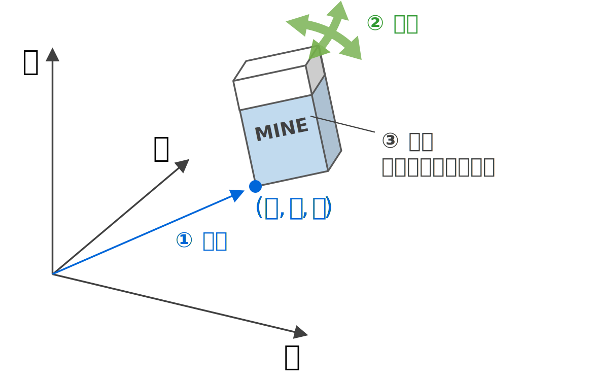

導入
質点・剛体
力学は物体の運動を記述する学問です。そのためには，ある時刻における物体の空間的な「配置」を記述する必要があります。この記述はどのように行えばよいでしょうか。ここでは身近な例として，今あなたの目の前にある消しゴムを記述する方法を考えてみましょう。
まず，消しゴムの①位置(position)の情報が何よりも必要でしょう。消しゴムの位置を記述するためには，まず図1のように我々の住む空間に，適当に $xyz$ 直交座標を引きます（座標はどのように引いても構いません。大事なのは，とにかく1つ座標を引いて，固定しておくことです）。そして，3つの座標の値 $(x,y,z)$ を指定することで記述できます。

図1 物体の配置を記述するための情報の説明。
\eqref{sin}は正弦関数，\eqref{cos}は余$\sin x$弦関数の定義です．
\begin{align} \sin x = x-\frac{x^3}{3!}+\frac{x^5}{5!}+\cdots \label{sin} \\ \cos x = 1-\frac{x^2}{2!}+\frac{x^4}{4!}+\cdots \label{cos} \end{align}インラインで数式 \(\int_0^\infty \frac{k d^3 r}{|r- r'|}\) ，\(\sin x\) を書くこともできるでしょう。
\begin{align}
\int_0^\infty \frac{k d^3 r}{|r- r'|}
\end{align}
\begin{align}
\sin x
\end{align}
定義1 定義する。
\begin{align} \int_0^\infty \frac{k d^3 r}{|r- r'|} \end{align}例題1 求めよ。
例1 求めよ。